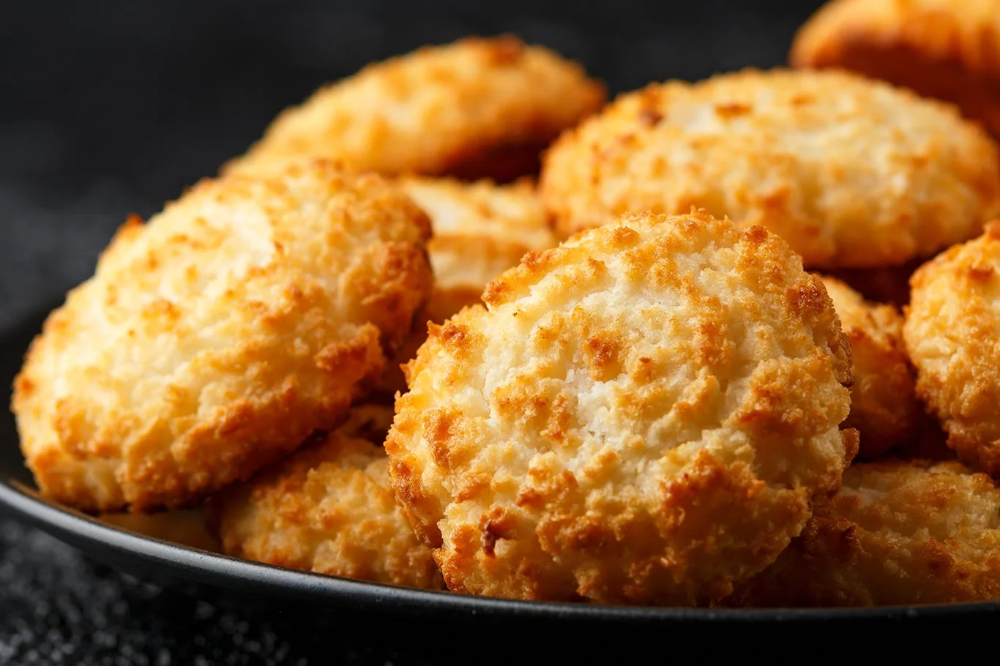

Galletitas de Coco

Ingredientes:
125g de coco rallado
100g de azucar
40g de harina
2 huevos
Una pizca de sal
Preparación:
Con batidora eléctrica batir los huevos con el azúcar y la pizca de sal hasta que queden cremosos.
Añadir la harina con un colador y mezclar.
Agregar el coco y mezclar.
Dejar 30 minutos en la heladera.
Precalentar el horno a 180° y cocinar durante 8 a 10 minutos.